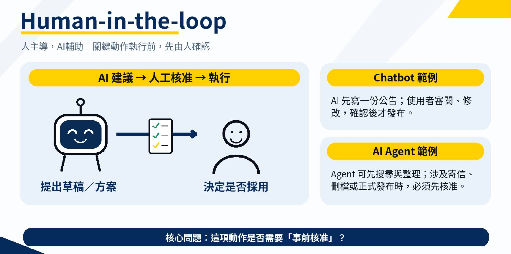
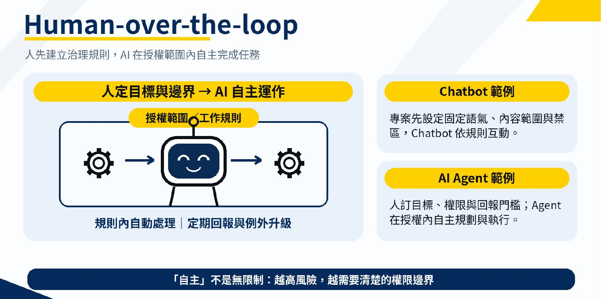
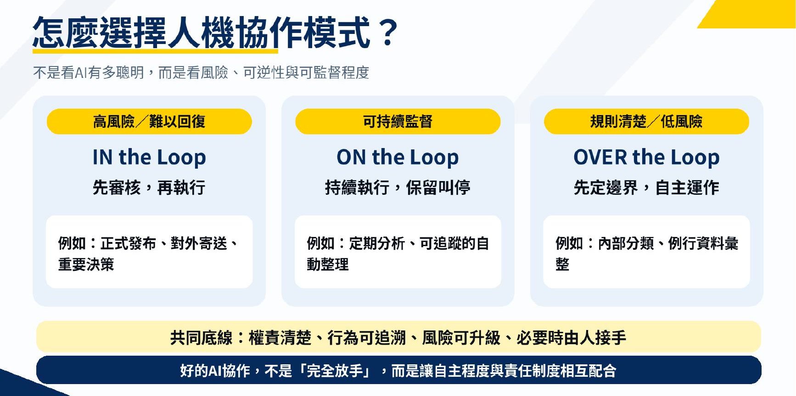

0. 課程資訊與教材
| 課程名稱 | EP58 AI Agent 該放手到哪裡？In／On／Over the Loop 人機協作 |
|---|---|
| 日期 | 2026/11/07（依簡報檔案建立時間；錄影未口述日期） |
| 教材 | 1 支 54:14 錄影＋10 頁簡報 |
| 核心問題 | 哪些步驟必須等人、哪些可以先跑再監看、哪些能在規則內自主完成？ |
下載正式手冊
🔒
公開畫面已逐張檢查。本頁三張圖都取自簡報，已完整裁去含錯誤集數的頁首，且未含帳號、書籤列、分頁、網址、API key、個資或系統通知；原始錄影畫面不公開。
1. 一張圖看懂：放權不是二選一
人不是突然從迴圈中消失，而是把介入位置從「每一步核准」移到「監看與治理」。
2. 三種模式不是三個 AI，而是三種工作流設計
課堂先把焦點從「模型夠不夠強」拉回「人怎麼分工」。同一個模型，只要改變核准點、授權邊界與回報規則，就會形成不同的協作模式。
「它不是新的 AI 模型，它是一個分工的設計。」
［06:00］先設計 AI 要協助到什麼程度，再談自主化。
- 任務：先寫清楚完成條件與不可做事項。
- 權限：只開放完成任務所需的最小範圍。
- 節點：決定何時要等人、何時只通知、何時可直接執行。
- 責任：最終仍由誰確認、修正與承擔結果。
3. Human-in-the-Loop：高風險動作前，必須等人
AI 可以找資料、整理選項、寫草案；發送、刪除、付款、公開發布或採用重要結論前，由人核准。

| 適合情境 | AI 先做 | 人要決定 |
|---|---|---|
| 對外內容 | 研究、草稿、版型 | 事實、語氣、發布 |
| 重要文件 | 摘要、比對、建議 | 採用、簽核、送出 |
| 新工作流 | 跑第一版流程 | 逐步確認是否符合需求 |
「我不要直接一步登天。」
［13:13］先看方案與草案，不讓 AI 從一句話直接跳到最終檔案。
4. Human-on-the-Loop：AI 自動執行，人持續監看
當步驟已被理解、錯誤能及時發現且可以暫停時，人不必每一步按同意，但必須看得到進度與異常。
- 把每一步的進度與輸出留下紀錄。
- 先定義異常門檻：超時、重複、品質下降或權限不足。
- 提供立即暫停與人工接手機制。
- 確認已產生的副作用能復原或補救。
⚠️
只有「看得到」還不夠；如果不能停、不能接手、不能回復，就不是真正可控的監看。
5. Human-over-the-Loop：先走過一次，再讓 AI 在界線內自主
課堂反覆強調：自主不是憑感覺信任，而是把已驗證的做法寫成規則。正常路徑由 AI 完成，例外才升級給人。

「他做完一次，我發現這個流程是順暢的，接著我會把它寫成規矩。」
［24:00］先驗證，再規格化，最後才放權。
| 放權前檢查 | 要能回答 |
|---|---|
| 完成定義 | 什麼叫做好？品質如何驗收？ |
| 允許範圍 | 能讀寫哪些資料、能用哪些工具？ |
| 禁止事項 | 哪些動作永遠要問人？ |
| 例外處理 | 遇到不確定、超時或衝突時怎麼升級？ |
| 可追溯性 | 人能否知道它做過什麼、為何這樣做？ |
6. 對話規則與系統權限，要分開設計
在 Chatbot 專案裡，自訂指示可以寫角色、工作規則、介入點與回報方式；在能使用工具的 Agent 環境裡，則可用 AGENTS.md 表達長期規則。文字規則是行為約定，真正的檔案、網路與系統權限仍由工具環境強制執行。
Role：你負責什麼，不負責什麼
Allowed：可以讀寫哪些範圍、使用哪些工具
Approval：哪些動作執行前必須取得同意
Escalation：遇到不確定、衝突或失敗時如何停下並回報
🔧
文字不是安全邊界。若工具環境仍允許高風險操作，不能只靠提示詞期待它永遠遵守；要用權限、隔離、版本紀錄與審核共同約束。
7. 多 Agent 可以分工，但不能變成看不見的黑箱
課堂以研究、影片製作與檢查等角色示範任務交接。角色越多，越需要一位負責拆解與整合的管理角色，以及一致的紀錄格式。
| 必要元件 | 作用 |
|---|---|
| 管理者 | 拆任務、指定角色、整合結果，不直接包辦所有工作。 |
| 專業角色 | 研究、製作、檢查各自有明確輸入與輸出。 |
| 交接格式 | 記錄來源、完成項目、未決問題與下一棒。 |
| 品質閘門 | 檢查事實、版權、格式與風險後才進下一步。 |
| 人類介入點 | 初期看分鏡與重要決策；成熟後可改成只看例外與最終驗收。 |
課堂現場遇到權限與預覽問題，正好說明多 Agent 的難點不只在「叫誰做」，還在分享、權限、狀態同步、失敗復原與成果驗證。
8. 用風險、可逆性與可監看性選模式

| 問題 | 若答案偏高／偏難 | 建議 |
|---|---|---|
| 錯一次的損失大嗎？ | 金錢、名譽、法規或不可逆影響 | Human-in-the-Loop |
| 出錯能即時發現嗎？ | 可以觀察、暫停、回復 | Human-on-the-Loop |
| 規則與例外穩定嗎？ | 界線清楚、流程已多次驗證 | Human-over-the-Loop |
✅
成熟的做法不是整個專案只選一種模式，而是逐步分級：研究可 Over、製作可 On、對外發布仍 In。
9. 這堂課真正在教的事
- 先設計流程，再挑工具。模型不會替你決定責任邊界。
- 先帶 AI 走過一次，再把做法寫成 Skill。沒有驗證的自動化，只是把錯誤跑得更快。
- 自主程度提高，治理也要升級。可追蹤、可暫停、可復原與例外升級不能省略。
- 同一流程可混用三種模式。依步驟風險，而不是依工具名稱判斷。
💡
最實用的落地句：先走過、驗證、寫成規則，再逐步放權。
10. 老師金句
「它不是新的 AI 模型，它是一個分工的設計。」
［06:00］
「我不要直接一步登天。」
［13:13］
「已經走過一遍，已經實踐一遍了。」
［24:59］
「我把規則寫清楚，授權範圍也寫清楚。」
［27:51］
11. 延伸版本與完整下載
除了正式課堂筆記，另提供逐頁簡報整合、每 15 秒完整課堂版與可離線保存的 ZIP 筆記包。
| 版本 | 開啟或下載 |
|---|---|
| 10 頁簡報整合筆記 | 閱讀網頁 · PDF · Word |
| 每 15 秒完整課堂版 | 閱讀 217 格網頁 · 218 頁手機 PDF |
| ZIP 筆記包 | 下載完整離線包 |
12. 資料來源與整理限制
- 來源：54:14 課堂錄影、55 張自動擷取關鍵畫面、508 段語音轉錄、10 頁原始簡報。
- 專有名詞以簡報為準；逐字稿中的辨識錯字未當成事實依據。
- 時間戳是段落索引，可能與播放器顯示相差數秒。
- 公開頁只使用經人工檢視並裁去錯誤集數頁首的簡報畫面；每 15 秒完整版的 217 張錄影畫面已替換為時間碼隱私保護圖。
- 這是課堂整理，不是法律、資安或組織治理的正式意見。